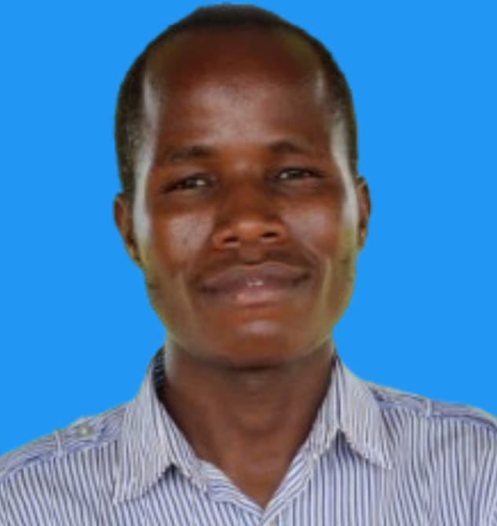
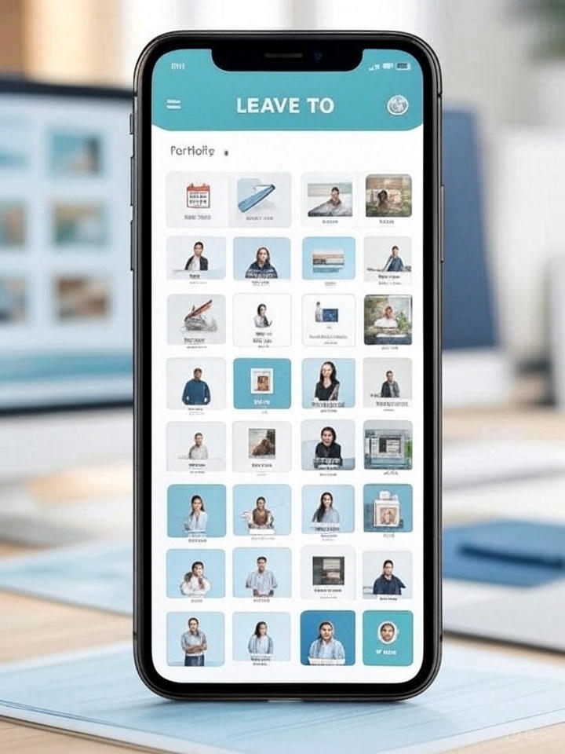
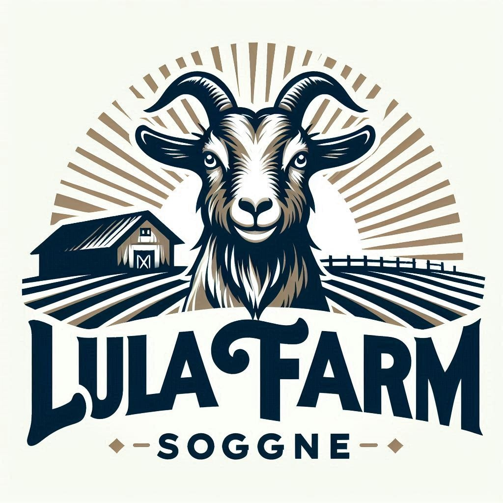

Hello, my name is Blasio Odhiambo
I am an aspiring web developer.
Learn more about me →
Hello! My name is Blasio Ochieng Odhiambo, an IT professional with a strong foundation in cyber security, system administration and IT support. I am an aspiring web developer.
My background includes a Bachelor's degree in Information Technology from the University of Eldoret.
Currently, I am actively advancing my skills through online training programs and industry-recognized certifications.
Looking ahead, I aim to become a reliable cybersecurity expert and web developer who contributes to digital safety, innovation, and transformation both locally and globally. My focus is on staying current, staying curious, and using technology to create positive impact.
I hold a Bachelor's degree in Information Technology from the University of Eldoret. Alongside my core studies, I have pursued online training programs in cybersecurity and cloud computing, and I am currently advancing my skills in software development. These programs have equipped me with practical knowledge in system security, cloud infrastructure, and web technologies. I have also earned several industry-recognized certifications, reflecting my dedication to continuous growth in the tech field.

This mobile application streamlines the leave application process in organizations. It replaces traditional handwritten and message-based leave requests with a structured, digital platform. Employees can apply for leave, track their request status, and view past leave records. The app enhances communication, accountability, and efficiency between staff and management.

This upcoming project will be developed as a final showcase after completing this software Engineering training program. The website will represent goat farming business and focus on building a clean, responsive, and professional portfolio. The project will be added to GitHub and included in this portfolio once complete.